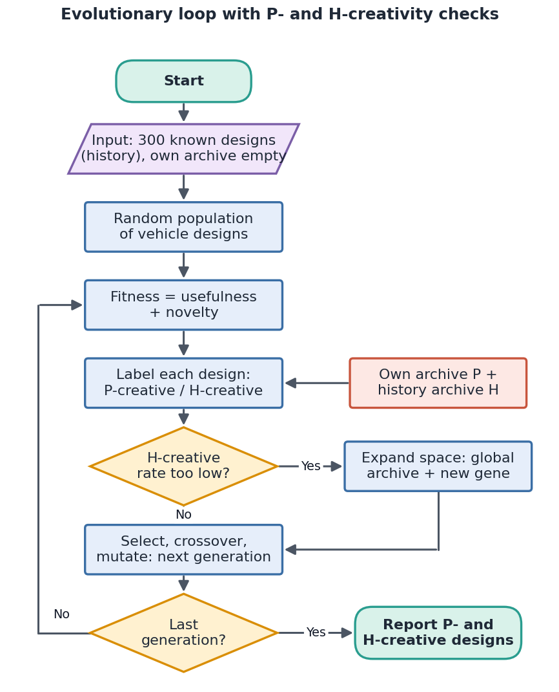
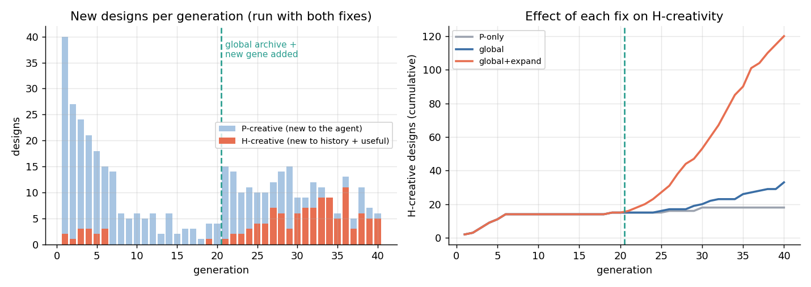
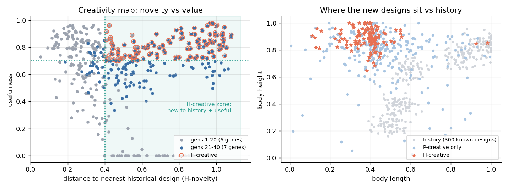
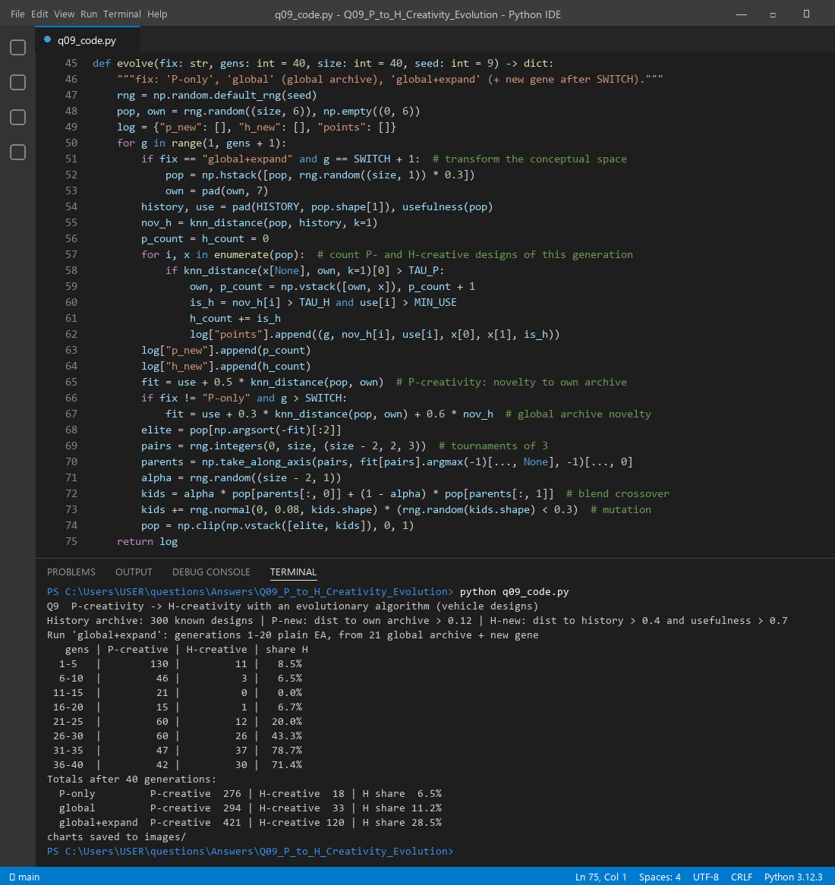

An evolutionary algorithm (EA) keeps making new designs by mixing and mutating old ones. Almost everything it makes is new to itself. That is P-creativity (Boden): new to the individual or agent. H-creativity is much harder: the idea must be new to all of history and still useful. The EA cannot see history unless we show it. So the honest answer is: yes, it can be extended, but only if we (1) give the EA a memory of what the world has already made and (2) let it step out of the old conceptual space.
| Kind | Test used in this answer |
|---|---|
| P-creative | Distance to the nearest design in the agent's own archive > 0.12, so the agent has never made anything like it |
| H-creative | Distance to the nearest of 300 historical designs > 0.40 and usefulness > 0.70. It is new to the world and valuable |
Every H-creative design is also P-creative, but not the other way round. In other words, P-creativity is H-creativity judged against a much smaller archive.
| Area | What evolves | Why it is P-creative |
|---|---|---|
| Vehicle / product design | Body and wheel genes (the car GA from the lectures) | Crossover gives body/wheel mixes the agent never drew before |
| Poetry | Word sequences (POEVOLVE, McGonnagall) | New lines that fit rhyme and metre |
| Music | Jazz riffs (Al Biles' GenJam) | Each solo differs from the bot's earlier ones |
| Chatbots and rules | Decision trees (see Q1) | New dialogue strategies for the bot |
| Neural networks | Connection matrices, learning rules (Chalmers 1990) | New architectures for that system |
| Art and patterns | Drawing programs (see Q8) | New shapes from combined actions |

function CreativeEA(history H, generations G, switch S):
P ← { }; population ← random designs
for g = 1 to G:
if g = S + 1: add a new gene to every design # expand the conceptual space
for each design x in population:
if dist(x, P) > τP:
P.add(x) # P-creative
if dist(x, H) > τH and useful(x) > 0.7: mark x H-creative
fitness ← useful(x) + 0.5·novelty(x, P)
if g > S: fitness ← useful(x) + 0.3·novelty(x, P) + 0.6·novelty(x, H) # global archive
population ← elites + mutate(blend_crossover(tournament(population)))
return P-creative and H-creative designs
Results of the "global+expand" run, in blocks of 5 generations:
| Generations | P-creative | H-creative | H share | What is happening |
|---|---|---|---|---|
| 1–5 | 130 | 11 | 8.5% | Everything is new to a "newborn" agent |
| 6–10 | 46 | 3 | 6.5% | Own archive fills up |
| 11–15 | 21 | 0 | 0.0% | Useful designs drift back toward history |
| 16–20 | 15 | 1 | 6.7% | Stuck: P-creative but not H-creative |
| 21–25 | 60 | 12 | 20.0% | Fixes switched on |
| 26–30 | 60 | 26 | 43.3% | The new gene is being explored |
| 31–35 | 47 | 37 | 78.7% | Most new designs are now new to history |
| 36–40 | 42 | 30 | 71.4% | Stable |
Totals after 40 generations for the three runs:
| Run | P-creative | H-creative | H share |
|---|---|---|---|
| P-only (plain EA) | 276 | 18 | 6.5% |
| + global archive | 294 | 33 | 11.2% |
| + global archive + new gene | 421 | 120 | 28.5% |

Yes, but not for free. The plain EA made 276 P-creative designs, yet only 18 (6.5%) were new to history and useful. The reason is simple: the useful region of the old space is already crowded with sedans, SUVs and trucks, so evolution keeps "rediscovering" them. Once the EA could see history (global archive) and had a new dimension to explore, it produced 120 H-creative designs, 6.7 times more. Most of them sit where no known vehicle sits: short but tall bodies (Figure 3, right).

| Idea | How it helps |
|---|---|
| Global archive + novelty search | Reward distance to history, not just to the agent's memory (+15 H-creative in our run) |
| Multi-objective fitness | Keep novelty, usefulness and surprise as separate goals (a Pareto front) so neither hides the other |
| Island models | Several sub-populations evolve apart and swap genes now and then, which keeps diversity |
| Human-in-the-loop (creativity test) | Experts rate candidates in the H-creative zone. The machine proposes; people judge value |
| Embedding search over patents/papers | A practical way to build a big history archive |
| Transformational operators | Change the representation itself, not only gene values (next section) |
q09_code.py runs all three EAs, counts P- and H-creative designs and draws the figures.

evolve() function and the real terminal output.Files in this folder: q09_code.py (source), q09_code.ipynb (Colab/Jupyter version, already run),
q09_output.txt (console output), images/ (all figures).